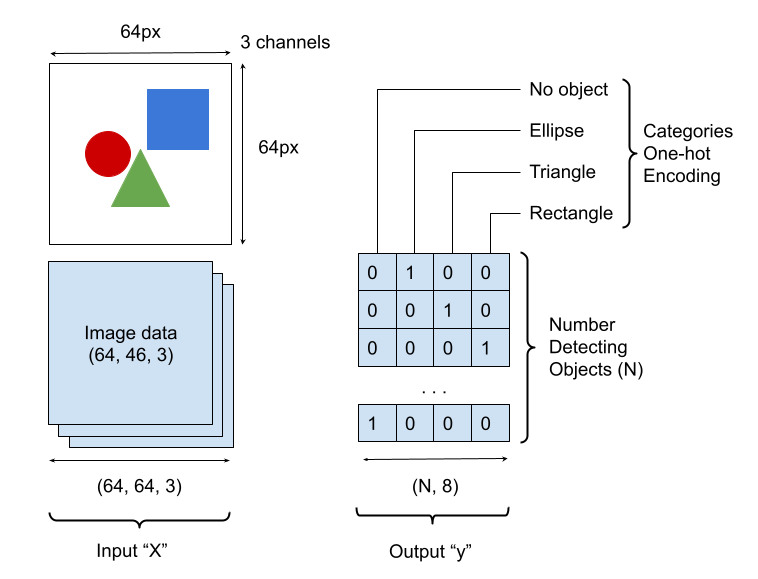
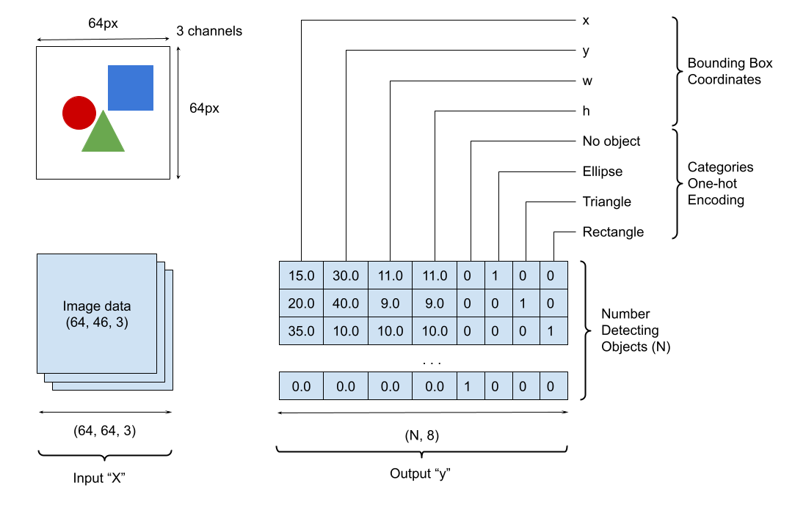
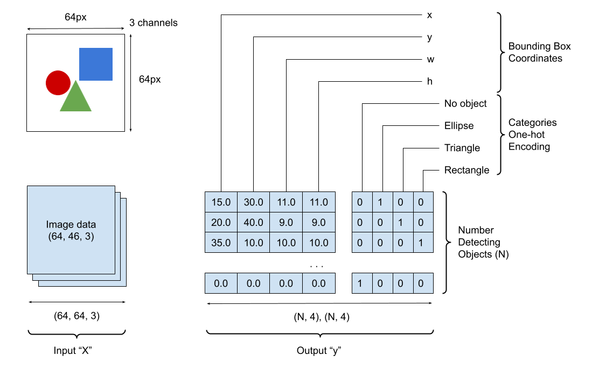
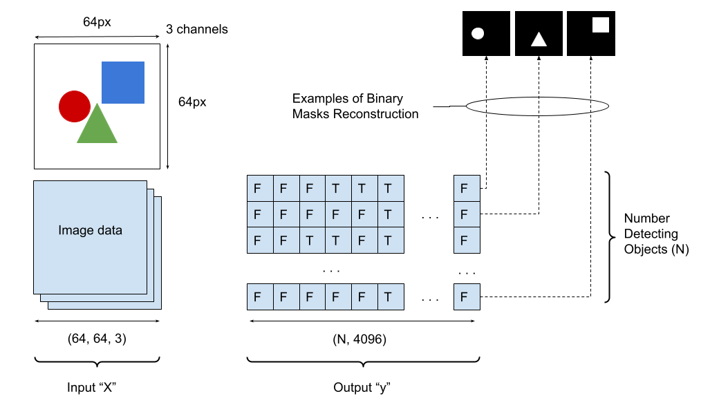
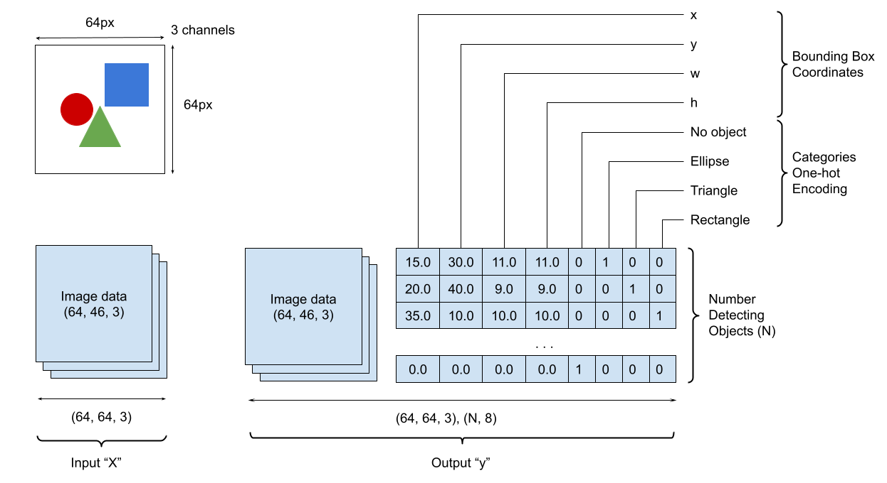

Load TFRecords
The following instructions describe how to use the created TFRecords for model fitting and testing.
Model Fitting
The typical usage of preparing training and validation data generators is shown below.
from squids import load_tfrecords
train_generator, train_steps_per_epoch = load_tfrecords(
"dataset/synthetic-tfrecords/instances_train",
output_schema=...,
num_detecting_objects=...
)
val_generator, val_steps_per_epoch = load_tfrecords(
"dataset/synthetic-tfrecords/instances_val",
output_schema=...
num_detecting_objects=...
)
...
model.fit(
train_generator,
validation_data=val_generator,
steps_per_epoch=train_steps_per_epoch,
validation_steps=val_steps_per_epoch,
...
)
...
The presented code creates two data generators one for the training cycle and another one for validation respectively. In addition load_tfrecords function (see PyDoc for more information) computes the number of steps required to go through the whole dataset.
Number of Detecting Objects
The number of detecting objects num_detecting_objects is probably a self-explanatory concept. It defines the maximum number of objects which a machine learning algorithm can detect within an image. It must greater than 0.
For instance, when fitting in a simple classification model predicting "Cat or Dog" in an image, set num_detecting_objects=1. Assuming that the supplying data have just one object annotation per image.
Important
The num_detecting_objects==None retrieves the exact number of annotated objects.
Important
The num_detecting_objects==1 is a special case. Effective it makes this task as simple image classification, single object localization, or mask detection. In this case, the 2D output is squeezed to 1D. For example, let assume the num_detecting_objects==1 when we predict object category. It makes this task as image classification where one-hot encoding [[0, 1, 0, 0]] (2D tensor) should be transformed to [0, 1, 0, 0] (1D tensor).
Output Schema
The constructed data generator defines the model input data X as a 3D image array. The model output data y are configurable via the function argument output_schema. The output schema is defined by a string that may contain a combination of the following characters:
| Character | Definition |
|---|---|
| I | "input" image data |
| C | one-hot categories encoding |
| B | bounding boxes |
| M | boolean masks |
| , | the flag to create separate output |
Important
Make sure that the output schema does not include any other symbols (including empty spaces) rather than the 5 characters listed in the above table.
Example of "C" Configuration
This is an example where a model designed to predict categories of shapes within an image. The output schema is "C". The character C indicates that this model output contains just categories one-hot encoding (N, 4), where 4 stands for 3 possible categories ("ellipse", "triangle", and "rectangle") plus "no object" category. See the image below for more details.

Example of "BC" Configuration
This is an example where a model designed to predict bounding boxes and categories of shapes within an image. The output schema is "BC". The character B indicates that the model output contains bounding boxes and C - categories respectively. No comma between characters B and C indicates that bounding boxes and categories are concatenated for the one head (N, 8). See the image below for more details.

Example of "B,C" Configuration
This is an example where a model is designed to predict bounding boxes and categories of shapes within an image. The output schema is "B,C". The character B indicates that the model output contains bounding boxes and C - categories respectively. The comma between characters B and C indicates that bounding boxes and categories are supplied into two separate heads (N, 4) (N, 4). See the image below for more details.

Example of "M" Configuration
This is an example where a model is designed to predict masks of shapes within an image. The output schema is "M". The character M indicates that this model output contains just image boolean masks (N, 4096), where 4096 stands for flattened masks of size 64x64. See the image below for more details.

Example of "I,BC" Configuration
This is an example where a model (of autoencoder) is designed to reconstruct an image and predict bounding boxes and categories of shapes within an image. The output schema is "I,BC". The character I indicates that one model output contains image (identical to the input one), B - bounding boxes, and C - categories respectively. The comma between characters I and BC indicates that the image is supplied to the one head and bounding boxes together with categories are supplied to another heads (N, 4) (N, 4) accordingly. See the image below for more details.

PyDoc
A module for converting a data source to TFRecords.
load_tfrecords(tfrecords_dir, output_schema=OUTPUT_SCHEMA, num_detecting_objects=NUM_DETECTING_OBJECTS, batch_size=BATCH_SIZE, steps_per_epoch=0, verbose=False)
Returns TFRecord dataset and the number of steps per epoch.
Parameters:
| Name | Type | Description | Default |
|---|---|---|---|
tfrecords_dir
|
str
|
The path to directory with TFRecords. |
required |
output_schema
|
str
|
The output schema defines the format of output data (default is just categories for every object present on the input images). Read this function description to understand how to define the output schema. |
OUTPUT_SCHEMA
|
num_detecting_objects
|
int
|
The number of detecting objects per input image. It must greater
than 0. To ignore the number of detecting objects and retrieve
the exact number of annotated objects, set this argument to
|
NUM_DETECTING_OBJECTS
|
batch_size
|
int
|
The batch size. It must greater than 0. |
BATCH_SIZE
|
steps_per_epoch
|
int
|
The number of steps per epoch. If the number of steps is set to
0, the internal process will define it by scanning all TFrecords.
This process might take some time, so it is advisable to set the
|
0
|
verbose
|
bool
|
The flag to set a verbose mode. |
False
|
Returns:
| Type | Description |
|---|---|
(dataset, steps_per_epoch)
|
|
|
|
|
Raises:
| Type | Description |
|---|---|
ValueError
|
If the function argument values are incorrect. |